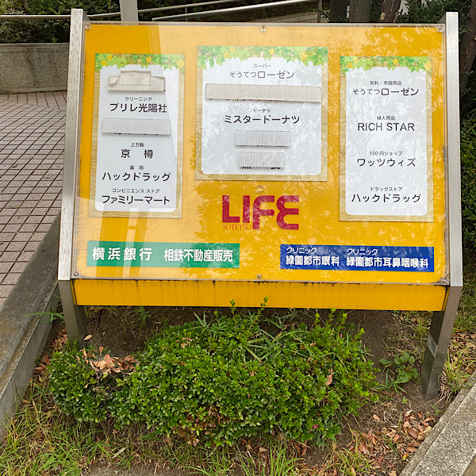
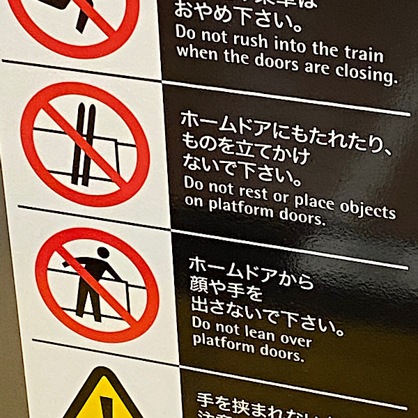

課題：看板・サインの撮影
- 日時：2021年10月10日 16時ごろ
- 撮影者：常定光希
「最寄り駅の戦闘力」

駅周辺の店舗一覧表です。戦闘力とは、その駅がどれだけ栄えているかをお店を指標として表した自作概念です。
かつて、いずみ野線で最強を誇っていた緑園都市ですが、町の高齢化に伴い、戦闘力は低下の道をたどる一方―――――。
しかし、我が駅には由緒正しいフェリス女学院があります。スタバができるなどの今後の覚醒に期待しましょう。
「スキー帰り」

駅のホームドアにものを立てかけないことを呼びかける標識。
よく見ると、スキー板のマークが。スキー板を持って電車に乗る人はレアだろう。